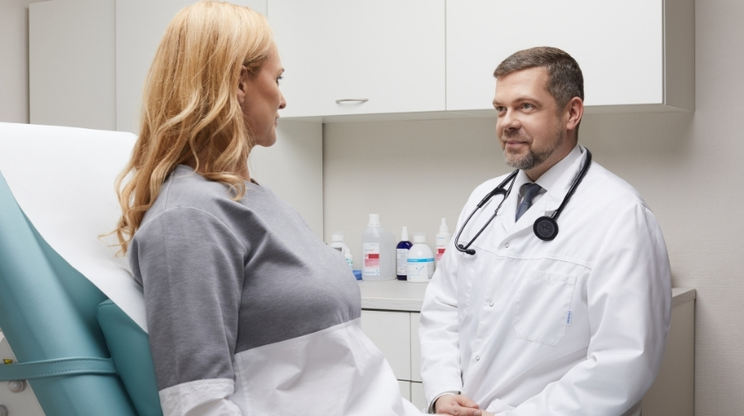

Meie meeskond
Pikaaegse kogemusega arstid ja õed ootavad Teid vastuvõtule.
Dr Liina Rajasalu
Dr Liina Rajasalu on alates 2012. aastast töötanud Ida-Tallinna Keskhaigla Naistekliinikus. Erialases töös on ta keskendunud rasedusaegsetele terviseprobleemidele ning teostab kõiki vajalikke loote ultraheliuuringuid. Alates 2009. aastast omab ta litsentsi raseduse I trimestri sõeluuringu läbiviimiseks.
Dr Liina on Eesti Naistearstide Seltsi, Eesti Perinatoloogia Seltsi ja International Society of Ultrasound in Obstetrics and Gynecology liige.
Dr Viktoria Mirošnikova
Viktoria Mirošnikova on töötanud pärast residentuuri lõpetamist naistenõuandlas nii Soomes kui Eestis. Ta kuulub Eesti Naistearstide Seltsi. Dr Mirošnikova tegeleb peamiselt ambulatoorse günekoloogiaga, teeb günekoloogilisi ultraheliuuringuid ning tegeleb rasedusaegsete terviseprobleemidega.
Dr Jaanika Heinväli
Dr Jaanika Heinväli on spetsialiseerunud sünnitusabile ja günekoloogiale. Tal on mitmekesine kogemus erakorralise meditsiini, nakkushaiguste ja naistehaiguste valdkonnas. Ta kuulub Eesti Arstide Liitu.
Dr Anna-Maria Gavšina
Dr Anna-Maria Gavšina tegeleb põhiliselt ambulatoorse günekoloogiaga, günekoloogilise ultraheliga ja kolposkoopiaga. Ta on Eesti Naistearstide Seltsi, Eesti Kolposkoopia Ühingu, Eesti Arstide Liidu ja International Society of Ultrasound in Obstetrics and Gynecology liige.
Dr Elise Keskpaik
Naistearst günekoloogia ja naistetervishoiu valdkonnas.
Dr Laura Rähni
Dr Laura Rähni on töötanud Tartu Ülikooli Kliinikumis, Lõuna-Eesti Haiglas, Põlva Haiglas ning Confido Tartu kiirkliinikus. Alates 2022. aasta septembrist on ta arst-resident sünnitusabi ja günekoloogia erialal. Ta kuulub Eesti Arstide Liitu ja Eesti Nooremarstide Ühendusse.

Dr Ingmar Lindström
Dr Ingmar Lindström töötas 2007.–2018. aastal peamiselt Soome Vabariigi haiglates ja tervisekeskustes, sh Kuusankoski, Kouvola ja Pyhtää tervisekeskuste peaarstina. Ta on nelja aasta jooksul töötanud lastenõuandla arstina ning omab valvetöö kogemust Soome tervisekeskustes (üle 3500 tunni) ja haiglates (üle 1500 tunni).
Ta on Harvard Business Review Advisory Council liige ning Eesti Diplomaatide Kooli ja EBSi Tervishoiu Valdkonna Juhi Arenguprogrammi vilistlane.
Concierge vastuvõtt: 330 €/tund. Info: info@valvekliinik.ee
Dr Maria Pintsaar
Kogenud perearst. Concierge teenus alates 250 €/kuus.
Pediaatrid (lastearstid)
Valvekliinik pakub kiiret lastearsti vastuvõttu ilma aega broneerimata. Konkreetsete lastearstide andmed on kättesaadavad broneerimisel. Lastearsti vastuvõtt: 90 €.
Sisehaiguste arstid
Sisehaiguste arstide täpsed andmed on kättesaadavad broneerimisel. Konkreetne arst sõltub graafiku vabadest aegadest.
Broneeri vastuvõtt
Sepapaja 12/1, Ülemiste Tervisemaja 2, 3. korrus · E–R 09–18 · L 12–16